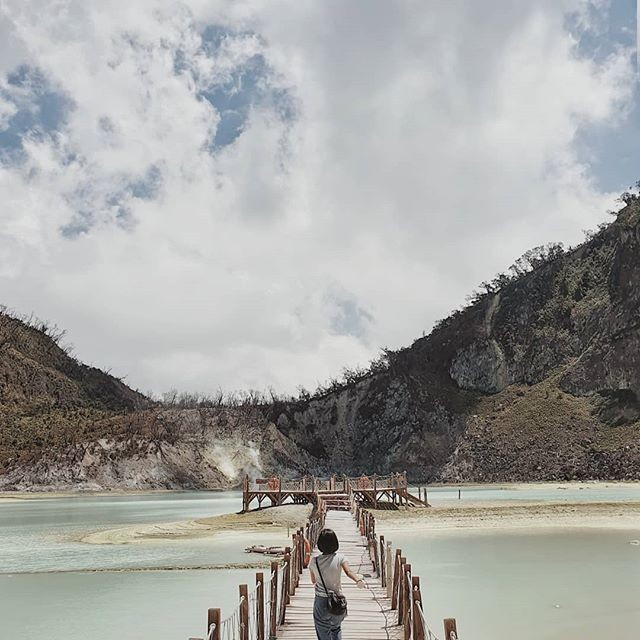

Kawah Putih Ciwidey
Gak hanya kawasan wisata Gunung Tangkuban Perahu yang memiliki pemandangan indah. Kawah Putih Ciwidey juga menawarkan view yang menakjubkan, sehingga banyak pengunjung yang menjadikan lokasi ini sebagai latar foto. Jadi, sayang kalau dilewatkan.
Read More